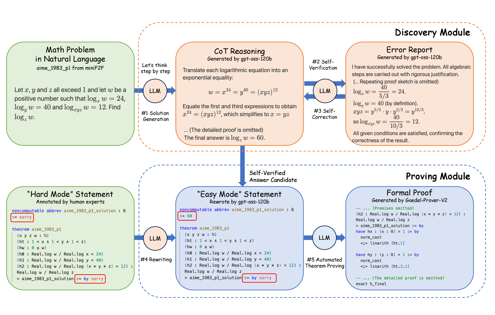

Open-source agentic framework for Hard Mode automated theorem proving in Lean 4.
Abstract
Most ATP benchmarks embed the final answer within the formal statement – a convention we call "Easy Mode" – a design that simplifies the task relative to what human competitors face and may lead to optimistic estimates of model capability. We call the stricter, more realistic setting "Hard Mode": the system must independently discover the answer before constructing a formal proof. To enable Hard Mode research, we make two contributions. First, we release MiniF2F-Hard and FIMO-Hard, expert-reannotated Hard Mode variants of two widely-used ATP benchmarks. Second, we introduce Discover And Prove (DAP), an agentic framework that uses LLM natural-language reasoning with explicit self-reflection to discover answers, then rewrites Hard Mode statements into Easy Mode ones for existing ATP provers. DAP sets the state of the art: on CombiBench it raises solved problems from 7 (previous SOTA, Pass@16) to 10; on PutnamBench it is the first system to formally prove 36 theorems in Hard Mode – while simultaneously revealing that state-of-the-art LLMs exceed 80% answer accuracy on the same problems where formal provers manage under 10%, exposing a substantial gap that Hard Mode benchmarks are uniquely suited to measure.
Problem
Most automated theorem proving benchmarks embed the final answer in the formal statement (Easy Mode), making the task easier than what human competitors face and potentially overestimating model capability.
Approach
The authors define Hard Mode, where a system must independently discover the answer before constructing a formal proof. They release MiniF2F-Hard and FIMO-Hard, expert-reannotated Hard Mode variants of existing benchmarks. They introduce Discover And Prove (DAP), an agentic framework that uses LLM natural-language reasoning with self-reflection to discover answers, then rewrites Hard Mode statements into Easy Mode ones for existing Lean 4 ATP provers.

Figure 2: Primary flowchart. A mathematical problem is first processed by the Discovery Module to generate a solution; this solution is then incorporated into the Easy Mode statement during the rewriting stage. Orange circles denote the reasoning LLM, and blue circles denote the theorem prover (another distinct LLM).
Results
On CombiBench, DAP raises solved problems from 7 (previous SOTA at Pass@16) to 10. On PutnamBench it is the first system to formally prove 36 theorems in Hard Mode. The work also reveals that LLMs exceed 80% answer accuracy on problems where formal provers manage under 10%, exposing a large gap between informal reasoning and formal proving.